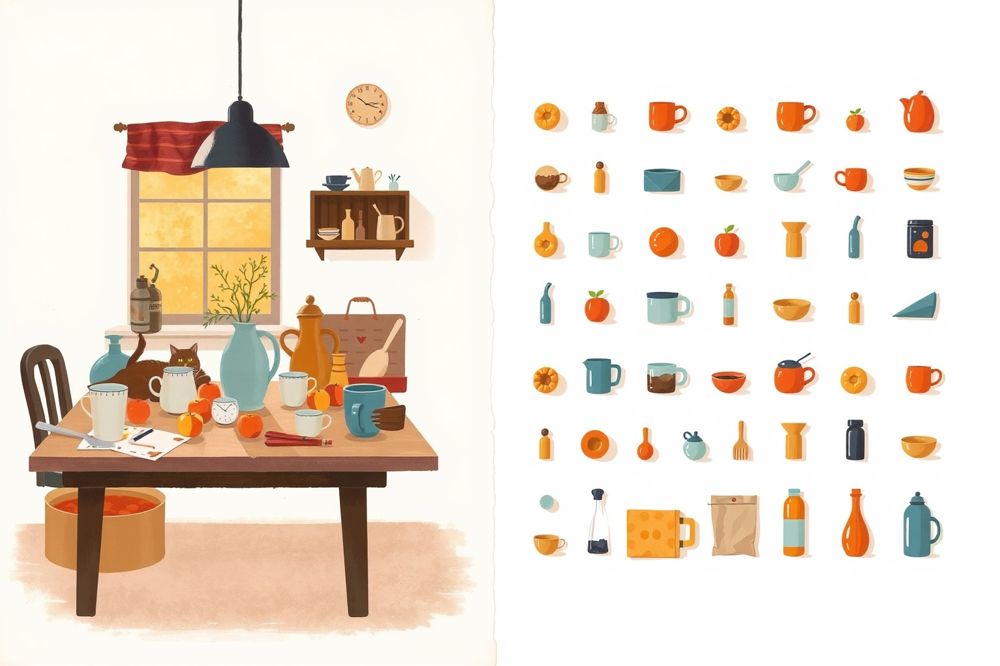
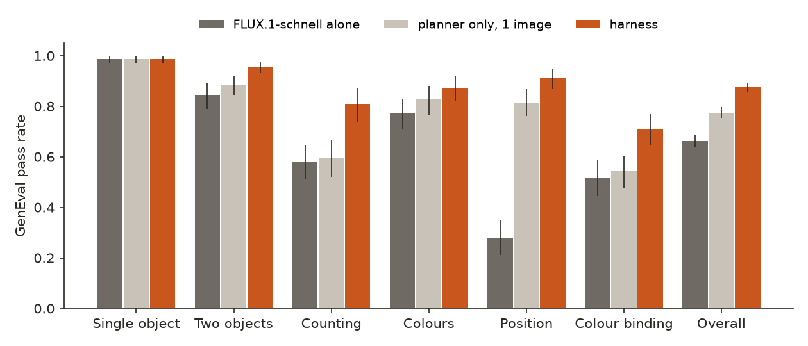
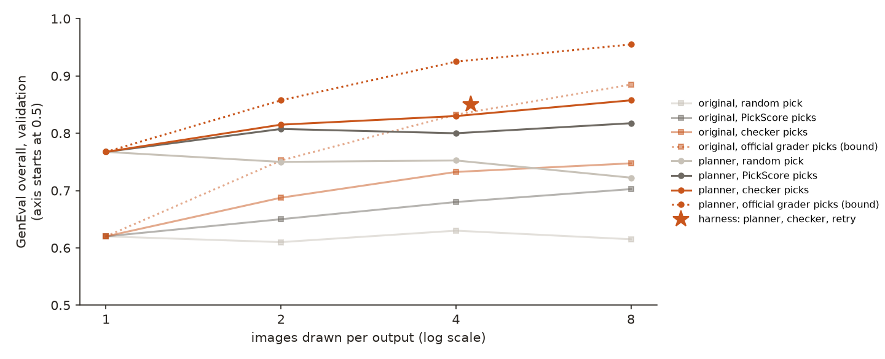
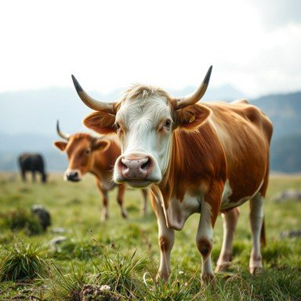
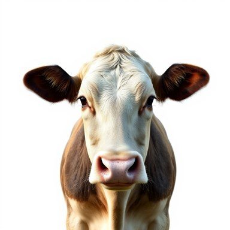
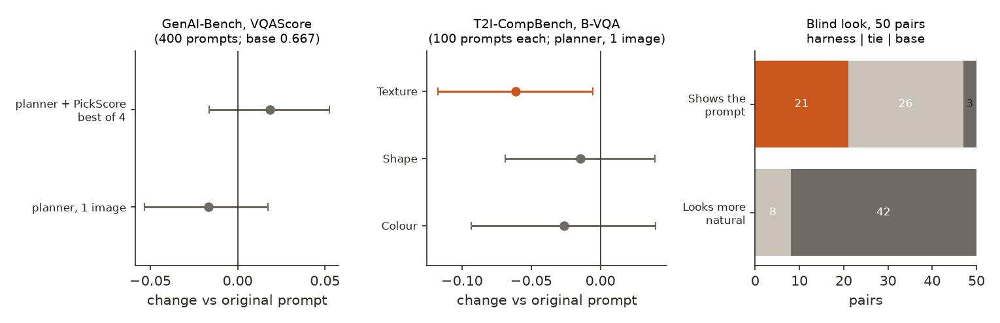

← Research·Experiments··Updated
A cheap harness lifts FLUX.1-schnell from 0.66 to 0.87 on GenEval, and turns its photos into catalogue shots
Agent builders wrap an open image model in a planner, a picker and a retry, and report that it beats bigger models on a benchmark. This note builds one for GenEval, takes it apart on held-out prompts, tests it once, and then checks what the benchmark does not see: another benchmark, the price and wait per image, and what the pictures now look like.
Update, Nov 11, 2026: a planner told to keep a natural scene keeps the score and loses the catalogue look. On the official prompts it scores 0.869 against 0.873 (paired −0.003 [−0.030, +0.023]), and its images look more natural than the first harness’s in every one of 553 pairs, by a judge checked against the blind look. See 4.7.

Summary: the short answer and the key results
In short
Can a cheap harness make a small open image model score like the best image models on GenEval?
On GenEval, yes. FLUX.1-schnell alone passes 0.663 of GenEval’s 553 official prompts (four images each). Wrapped in a harness that has an LLM rewrite the prompt, draws four images, lets an independent object detector pick one and redraws once if none passes, it passes 0.874 (95% interval 0.854 to 0.894), a paired gain of 21 points. That is above every published single-model score we found, including GPT-4o image and Seedream 3.0 (0.84), level with Qwen-Image (0.87), and it draws 4.3 images per answer, about a quarter of what the RAISE agent draws for 0.93. RL-trained SD3.5-Medium (0.95) and the bigger agent harnesses still score higher. The gain does not carry over: on 400 GenAI-Bench prompts, scored by a model that never saw GenEval, the rewritten prompt changes nothing (−0.017, interval −0.053 to +0.018). And the pictures change: in a blind look at 50 pairs, the harness image showed the prompt better in 21 and worse in 3, but the plain model’s image looked more natural in 42 and the harness’s in none. The planner asks for objects alone on a plain background, which is what a detector counts best.
Key results
| What we tested | Result | Compared with |
|---|---|---|
| Does the harness beat the same model alone? (553 official prompts × 4 images, tested once) | Yes, by 21 points: 0.874 [0.854, 0.894] against 0.663 [0.640, 0.687]; paired +0.212 [+0.187, +0.236] | Planner alone, one image: 0.775 (+0.112 [+0.088, +0.137]) |
| Which part does it? (validation, 200 prompts) | The planner fixes position (0.29 → 0.90); the picker fixes counting and colour binding. Planner +0.148; checker picking best of 4 +0.113; together +0.210; with the retry +0.230 | A random pick of 4 adds nothing (0.630); PickScore as the picker adds less than the checker (0.800 vs 0.830 with the planner) |
| Where does it sit among published GenEval scores? | Above every single model but level with Qwen-Image (0.87), at 4.3 images per answer | Behind SD3.5-M + Flow-GRPO (0.95), RAISE (0.93-0.94, 18.7 images) and ReflectionFlow (0.91, 32 images) |
| Does it help on prompts it was not written for? (GenAI-Bench, 400 prompts, VQAScore) | No: planner −0.017 [−0.053, +0.018]; planner + PickScore best of 4 +0.018 [−0.016, +0.052] | T2I-CompBench texture with the planner: −0.061 [−0.117, −0.005] |
| What do the images look like? (blind look, 50 pairs, sides hidden) | Catalogue shots: the harness image showed the prompt better in 21 pairs (worse in 3, tie 26) and looked more natural in 0 (plain model 42, tie 8) | Official grader on the same 50: harness 43 pass, plain model 34 |
| Update (Nov 11): can the harness keep the score without the catalogue look? | Yes. A planner told to keep a natural scene: 0.869 [0.848, 0.892] on the official prompts × 2, paired −0.003 [−0.030, +0.023] against the first harness; more natural in 553 of 553 pairs (judge), 50 of 50 (blind look) | On GenAI-Bench its rewrite adds +0.102 [+0.063, +0.139] VQAScore over the plain prompt; the planner model changed too |
| What does each image cost, and how long does it take? | About $0.008 and 12.4 s (median, one request at a time) for the harness | FLUX.1-schnell alone: $0.0014 and 3.3 s |
01Introduction
Ask FLUX.1-schnell for “a photo of a train above a potted plant” and it draws a fine photo of a train at a platform with a potted plant in front of it. GenEval’s grader marks that wrong: the train is not above the plant. Ask an LLM to rewrite the prompt first, “exactly one train, positioned above exactly one potted plant, with the train in the upper part of the image and the potted plant directly below it … on a plain uncluttered background”, and FLUX.1-schnell draws a toy-like train hanging over a plant on a white wall. The grader marks it right. Both statements are true at once: the second image follows the prompt better, and it looks like no photo anyone would take. This note measures both halves.
What is known. GenEval (Ghosh et al., 2023) checks text-to-image models on short compositional prompts (one or two objects, a count, a colour, a left-right or above-below relation) with an object detector, and it is one of the most quoted numbers in model releases. Its scores have climbed fast: single models now reach 0.84 to 0.87 (GPT-4o image, Seedream 3.0, Qwen-Image), RL with the GenEval checker as the reward took SD3.5-Medium from 0.63 to 0.95 (Flow-GRPO), and agent harnesses that plan, draw many images and pick one report 0.91 to 0.94 on FLUX models (ReflectionFlow, RAISE).
What is missing. The harness papers change several things at once, draw 11 to 32 images per answer, and report the GenEval number. They seldom say what an answer costs in money and seconds, whether the gain holds on a benchmark the harness was not built for, or what happened to the pictures.
How much of GenEval can a cheap harness buy for a small open model, which part buys it, and what does it cost in money, time, other benchmarks and the look of the images?
What this note does. Its contributions:
- A harness with three switchable parts (an LLM prompt planner, best-of-N picked by an independent checker, one retry) around FLUX.1-schnell, with every combination scored on validation prompts that share no task with the test.
- One test run on GenEval’s 553 official prompts, four images each, paired prompt by prompt with the model alone, with dollars and seconds per image.
- Three guards the harness never saw: GenAI-Bench scored by VQAScore (checked first against GenAI-Bench’s human ratings), T2I-CompBench, and a blind look at 50 pairs.
- A comparison with 16 published GenEval scores, with how many images each system draws.
What would count as an answer. Set before the test run:
- Every choice is made on validation prompts; the official prompts are run once, with the configuration chosen on validation.
- The official grader never picks an image. The picker uses different models, so a gain cannot come from showing the grader its own answers.
- A part “helps” only if the paired difference with it switched off has an interval above zero.
- “Beats” a published score needs our interval above it; a published score inside the interval is a tie.
- A gain on GenEval that loses on the guards is reported as a GenEval gain, not as better images.
02Setup
2.1 GenEval 101, for software engineers
- The test is a unit test for pictures. Each prompt comes with a spec: “a photo of three kites” expects class
kite, count 3. The grader runs an object detector (Mask2Former, trained on the 80 COCO classes), keeps detections above a confidence cut, and checks the spec: the right classes, the exact counts, for colour prompts the colour of each object (CLIP chooses among ten colour names on the cropped object), for position prompts the centres of the two boxes. - Six categories: single object (80 prompts), two objects (99), counting (80), colours (94), position (100) and colour binding (“a red umbrella and a blue couch”, 100). The score is the pass rate per category, averaged over the six.
- Four images per prompt with different seeds, 2,212 images in all. We ported the official grader (same weights, same thresholds) and ran it unchanged; FLUX.1-schnell alone scores 0.663 with it, inside the published 0.658 to 0.674.
- What a pass does not check: whether the picture looks good, is a photo, or has anything else in it.
2.2 The harness: a planner, a picker and a retry
- The planner is one call to gpt-5.4-mini with a fixed instruction (in the appendix): keep every object, number, colour and relation; write counts as digits and words; put each colour next to its noun; place left/right/above/below explicitly in the frame; prefer a plain, uncluttered background and large, unoccluded objects; at most 70 words.
- Best-of-N draws N images from the rewritten prompt with different seeds, all at 1024 × 1024, 4 steps, guidance 0 (FLUX.1-schnell’s settings).
- The picker is a second checker that reads the same spec as GenEval but uses different models: OWLv2 (an open-vocabulary detector) for objects and counts, and a different CLIP (ViT-H) for colours. It picks an image that passes, breaking ties by PickScore, a model of human preference. On the 9,452 test candidates it agrees with the official grader 83.0% of the time: a useful judge, not a copy of the grader.
- The retry: if none of the 4 images passes the picker, the planner is called again with the failure (“wanted counts {kite: 3}, a detector found {kite: 5}”) and 4 more images are drawn. It fired on about 7% of test outputs, hence 4.27 images per answer on average.
- The picker needs the spec (which objects, how many, which colour); that is GenEval’s format. On prompts without one (GenAI-Bench), only the planner and a PickScore pick can run.
2.3 Prompt sets: what each was used for
| Set | What it is | Size | Used for |
|---|---|---|---|
| Validation | Prompts made from GenEval’s own templates with other objects, numbers and colours; no prompt text and no task shared with the official set (make_prompts.py). Five categories (all 80 single-object prompts are already official) | 200 | Every choice: which parts, which picker, how many images; two outputs per prompt |
| Official test | GenEval’s 553 prompts | 553 | Run once with the configuration chosen on validation; four outputs per prompt |
| T2I-CompBench guard | Its validation prompts for colour, shape and texture (Huang et al., 2023), scored by its B-VQA metric | 300 | Planner vs original prompt, one image each |
| GenAI-Bench guard | A random 400 of its 1,600 prompts (Li et al., 2024), with skill tags such as counting, negation and spatial relation | 400 | Original prompt, planner, planner + PickScore best of 4; scored by VQAScore |
| Judge check | GenAI-Bench’s first data shard: 134 prompts, each drawn by six models (DALL-E 3, Midjourney 6, SDXL and others) and rated 1-5 by three people | 804 images | Does VQAScore order those images as the raters do? |
2.4 The judges, and how each was checked
- The official grader was checked against published numbers for the same model (above) and on a blank image, which it must fail.
- VQAScore (Lin et al., 2024) asks a vision-language model “Does this figure show ‘<prompt>’? Please answer yes or no.” and takes the probability of “Yes”. We used Qwen2.5-VL-7B as the answering model, with no object detector anywhere. On GenAI-Bench’s rated images it gave the right prompt a higher score than a shuffled prompt for 99.6% of the 804 images (0.744 against 0.002 on average). It ordered two models’ images for the same prompt the same way as the raters’ mean 66.3% of the time (1,626 pairs), against 91.4% for one rater against the other two (3,024 pairs). So it is a coarse judge: good at “is this the prompt at all”, much weaker than a person at ranking two decent images. We use it only for average differences over 400 prompts.
- T2I-CompBench’s B-VQA multiplies a BLIP-VQA model’s P(yes) over the prompt’s noun phrases; it is the benchmark’s own metric.
- PickScore (Kirstain et al., 2023) is a CLIP model trained on people’s choices between two images; it is always scored against the original prompt, never the rewrite.
- The blind look is one rater reading contact sheets, with the sides of each pair shuffled by a seeded coin and the key opened only after all 50 pairs were rated. Two questions per pair: which image shows what the prompt asks for, and which looks more like a natural photo, ignoring the prompt. One rater is a small sample, and the note treats it as such.
03How the study was run
- Grader port on Modal, checked on a blank image and on FLUX.1-schnell’s official run: 0.663 against the published 0.658-0.674 (2,212 images).
- Validation pool: 200 prompts × 2 outputs × 8 candidates, from the original and from the planned prompt (6,400 images), each graded by the official grader, the picker and PickScore, plus 96 retry images. Every combination of prompt (original or planned), picker (random, PickScore, checker, official grader as a bound) and N (1, 2, 4, 8) is computed from this one pool.
- Choice: planner + checker best of 4 + retry (0.850 on validation, 4.24 images per answer), over best of 8 (0.857 at twice the images).
- Test: the official prompts with that configuration: 553 prompts × 4 outputs × 4 candidates, plus retries (9,452 images). The run was made in two halves (outputs 1-2, then 3-4) with the same frozen configuration and seeds set in advance; the first half alone gave 0.873, the whole 0.874.
- Guards: T2I-CompBench (600 images), GenAI-Bench (2,000 images, judge check on 804), the blind look (50 pairs), latency (20 requests).
| Fixed before the test run | Changed after reading results |
|---|---|
| The official grader and its thresholds; the validation prompts; the planner instruction; the picker; the configuration (planner + checker best of 4 + retry); the seeds; paired bootstrap intervals over prompts | The planner instruction was written once before validation and not tuned. After the first test half, the remaining two outputs per prompt, a GenAI-Bench guard, a latency measurement and a blind look were added, without changing the harness. The guards were chosen after the GenEval result was known, which is their point: to look where the benchmark does not. |
Conditions: FLUX.1-schnell in bf16 on Modal H100s (1.1 s per image in batches of 8); graders and scorers on A10G and L40S; the planner through OpenRouter. Spend for this note: about $56 of Modal (the base model’s own run, the validation pool and the guards included) and $0.66 of planner calls.
04Results
Six findings:
- 4.1 The harness adds 21 points on the official prompts.
- 4.2 The planner buys position; picking buys counting and colour binding.
- 4.3 It ties the best single model and trails the bigger harnesses.
- 4.4 The images become catalogue shots.
- 4.5 On benchmarks it was not written for, it helps nothing.
- 4.6 It costs about six times as much per image and four times as long.
- 4.7 Update: a planner that keeps the scene keeps the score.
4.1 The harness adds 21 points on the official prompts
On GenEval’s 553 prompts with four outputs each, FLUX.1-schnell alone passes 0.663 [0.640, 0.687] and in the harness 0.874 [0.854, 0.894]; paired by prompt, +0.212 [+0.187, +0.236]. Every category but single object (already 0.988) gains, and the biggest gain is position, 0.278 to 0.912 (Figure 1).

results/.The planner alone, one image per prompt, already reaches 0.775 (+0.112 [+0.088, +0.137]), almost all of it from position. If the official grader itself picked the best of the same four images, the score would be 0.941: the picker leaves about 7 points on the table where it disagrees with the grader.
4.2 The planner buys position; picking buys counting and colour binding
On the validation prompts, the planner alone adds +0.148 [+0.098, +0.202], the checker picking the best of 4 from the original prompt +0.113 [+0.070, +0.155], both together +0.210 [+0.155, +0.263], and the retry brings it to +0.230 [+0.177, +0.283]. They add up because they fix different things: the planner moves position from 0.29 to 0.90 and counting from 0.54 to 0.66; picking among four moves counting from 0.54 to 0.76 and colour binding from 0.54 to 0.61 (Figure 2).

results/harness_val/ablation.json.Three things the figure rules out. Drawing more images without a good picker does nothing (random pick: 0.61 to 0.63 at every N). PickScore, a preference model, is a weaker picker than the checker at every N, so the gain is not “prettier images happen to be right”. And the planner with a random pick is flat in N: four draws of the same rewrite are no better than one unless something chooses among them.
4.3 It ties the best single model and trails the bigger harnesses
At 0.874 [0.854, 0.894], the harness is above every published single-model GenEval score we found except Qwen-Image (0.87), which sits inside its interval: a tie. It is above GPT-4o image and Seedream 3.0 (both 0.84) and SANA-1.5 (0.81). It is behind RL-trained SD3.5-Medium (Flow-GRPO, 0.95), the RAISE agent on FLUX.1-dev and FLUX.1-schnell (0.94 and 0.93) and ReflectionFlow (0.91). Those harnesses draw 18.6 to 32 images per answer and call a vision-language model several times; ours draws 4.3, about a quarter of RAISE’s 18.7 (Figure 3).
![Dot chart of published GenEval overall scores, sorted. From the top: SD3.5-Medium + Flow-GRPO 0.95, FLUX.1-dev + RAISE 0.94 (18.6 images per output), FLUX.1-schnell + RAISE 0.93 (18.7), FLUX.1-dev + ReflectionFlow 0.91 (32), this harness 0.874 with its interval (4.3 images, orange star), Qwen-Image 0.87, Seedream 3.0 0.84, GPT-4o image 0.84, SANA-1.5 0.81, Janus-Pro-7B 0.80, FLUX.1-dev + T2I-Copilot 0.74 (11.3), SD3.5-Large 0.71, FLUX.1-schnell + GenPilot 0.696, DALL-E 3 0.67, FLUX.1-schnell alone (our run) 0.663, FLUX.1-dev 0.66, SD3.5-Medium 0.63.](figures/rivals.png)
A model alone and a harness are different kinds of system, and a single-model score is the wrong yardstick for a harness. What the comparison does show is that most of the distance on GenEval between a small open model and the best single models can be bought at test time, with no training, for under a cent an image.
4.4 The images become catalogue shots
In a blind look at 50 random official prompts (sides hidden), the harness image showed what the prompt asks for better in 21 pairs and worse in 3 (26 ties), and looked more like a natural photo in none: the plain model’s image did in 42 pairs, and 8 were ties. The official grader agreed with the first half: on these 50, 43 harness images pass against 34 plain ones. Figure 4 shows the first pair of each category.
![Two rows of six images. Top row, FLUX.1-schnell alone: a cow in a green field with other cattle behind; a toaster oven and a stove in a pastel kitchen; two steel ovens in a kitchen; a blue elephant in a forest; a train at a platform behind a potted plant; a purple wine glass in the dark with a black apple barely visible. Bottom row, the harness: a single cow's head cut out on white; a toaster and an oven on white; two small white ovens far apart on white; a blue elephant on grey; a model train above a potted plant on a white wall; a purple wine glass and a black apple on white.](figures/style.jpg)
Why: the planner was told to prefer a plain background and large, separated objects, because that makes an image easy to check, and the checker then picks the image it can read best. Both push toward the same picture: one of each object, centred, on white. GenEval rewards it, since nothing in the grader asks for a scene. The extra cows in a field and the kitchen around an oven are exactly what the grader counts as errors (“a photo of a cow” fails if three cows are found) and what a person reads as a photo. The viewer has all 50 pairs, with the rewrite the harness used and both grader verdicts.


The 50 blind-look pairs (random official prompts, seed 0), each the first of four outputs; left FLUX.1-schnell alone, right the harness. “Grader” is GenEval’s verdict; “rater” is the blind look’s answer for that pair. Without JavaScript, Figure 4 shows six of them.
4.5 On benchmarks it was not written for, it helps nothing
On 400 GenAI-Bench prompts scored by VQAScore, the planner’s rewrite changed nothing (−0.017 [−0.053, +0.018] against a base of 0.667), and the planner with a PickScore pick of four changed nothing either (+0.018 [−0.016, +0.052]). On T2I-CompBench the rewrite lowered texture by −0.061 [−0.117, −0.005]; colour and shape moved within their intervals. GenAI-Bench’s prompts are longer and ask for more than objects (actions, negation, comparison), and the planner’s rules, written for GenEval’s one-line specs, do not help them (Figure 5). By skill tag, only “differentiation” moved outside its interval, and down (−0.084 [−0.166, −0.006]); negation leaned up (+0.056 [−0.027, +0.148]) within its interval.

PickScore tells the same story. Against the original prompt, the planner’s images score lower on GenAI-Bench (−0.41 [−0.49, −0.33]) and on GenEval (22.60 against 23.03). The full harness on GenEval ends level (23.07), because the picker breaks ties by PickScore.
4.6 It costs about six times as much per image and four times as long
An answer from the harness takes 4.27 images on average: 4.8 H100-seconds, $0.0053 at Modal’s list price, plus about $0.002 to check and score them and $0.0004 for the planner, about $0.008 in all. FLUX.1-schnell alone costs 1.25 H100-seconds, $0.0014. One request at a time on warm containers, the harness took a median 12.4 s (90th percentile 22.5 s, when the retry fired: 3 of 20 requests) against 3.3 s for one plain image. Of the 12.4 s, the planner took 1.2, drawing four images 6.5 and the two scorers, run one after the other, 4.5; running them side by side would save about 2 s.
| System | GenEval | Images per answer | $ per image | Seconds (median) |
|---|---|---|---|---|
| FLUX.1-schnell alone | 0.663 | 1 | 0.0014 | 3.3 |
| Planner, one image | 0.775 | 1 | 0.0018 | ≈ 4.5 |
| Harness (planner, checker best of 4, retry) | 0.874 | 4.27 | ≈ 0.008 | 12.4 |
The planner-only row’s time is the planner’s 1.2 s added to one image, not a separate measurement.
4.7 Update (Nov 11): a planner that keeps the scene keeps the score
A new planner instruction asks for the same explicit counts, colours and positions, but inside a believable photographic scene (“a kitchen counter, a street, a field”), and forbids plain or studio backgrounds. With everything else unchanged (checker, best of 4, retry, seeds), it scores 0.869 [0.848, 0.892] on the official prompts against the first harness’s 0.873 [0.850, 0.894] on the same prompts and seeds: paired −0.003 [−0.030, +0.023], and the independent checker agrees (−0.002 [−0.014, +0.011]). Its images look more natural than the first harness’s in all 553 pairs a judge compared, and in all 50 pairs of a new blind look. Figure 6 shows the six prompts of Figure 4 again.
![Three rows of six images for the same six prompts. Top: FLUX.1-schnell alone (a cow in a field, a kitchen, two ovens, a blue elephant in a forest, a train behind a plant, a wine glass in the dark). Middle: the first harness (cut-outs on white). Bottom: the scene-keeping planner: a single cow in a fenced field, a toaster and an oven in a wooden kitchen, two wall ovens between kitchen cabinets, a blue elephant on a village road, a train on a bridge above a potted plant in a street, a purple wine glass and a black apple on a kitchen table.](figures/natural_style.jpg)
| Official prompts, 553 × 2 outputs, same seeds | First harness | Scene-keeping planner | Paired difference |
|---|---|---|---|
| GenEval overall (harness) | 0.873 | 0.869 | −0.003 [−0.030, +0.023] |
| Independent checker, same images | 0.972 | 0.970 | −0.002 [−0.014, +0.011] |
| Planner alone, one image | 0.771 | 0.789 | +0.018 [−0.013, +0.049] |
| Counting / colours / position | 0.806 / 0.867 / 0.925 | 0.762 / 0.915 / 0.935 | −0.044 / +0.048 / +0.010 (all intervals cross 0) |
| PickScore (against the original prompt) | 23.07 | 23.40 | +0.33 [+0.27, +0.38] |
| Looks more natural (judge, both orders) | 0 pairs | 553 pairs | 0 ties |
| Images drawn per answer | 4.27 | 4.33 |
How it was chosen. On the 200 validation prompts (one output each), the instruction was written once and run with two planners, Claude Opus 5.5 and Claude Sonnet 5.5. Both matched the first harness exactly (0.850 each; paired +0.000 [−0.055, +0.060] and +0.000 [−0.055, +0.055]); Opus was kept because the independent checker leaned its way (+0.005 against −0.015). The official prompts were then run once, with two outputs per prompt rather than four, to stay within budget; the comparison uses the first harness’s first two outputs, which scored 0.873 on their own.
The judge, and how it was checked. Claude Opus 5.5 was shown two images in both orders and asked which looks more like an ordinary photograph of a real scene; a side wins only if it wins in both orders. On the 50 pairs of the original blind look it agreed with the person 44 times (person: plain model 42, tie 8; judge: plain model 46, tie 4, harness 0). On validation it preferred the new harness in 199 of 200 pairs (1 tie), on the official prompts in 553 of 553. A new blind look at 50 validation pairs (one rater, sides hidden) agreed: more natural 50 to 0; which shows the prompt better, 2 to 3 with 45 ties.
Other prompts. On the 400 GenAI-Bench prompts, the new planner’s rewrite (one image, the same seed as before) scores 0.769 VQAScore against 0.667 for the plain prompt, +0.102 [+0.063, +0.139], where the first planner’s rewrite changed nothing (−0.017). Two things changed at once here, the instruction and the planner model (gpt-5.4-mini before, Claude Opus 5.5 now), and this note did not separate them. PickScore on those prompts is level with the plain prompt (+0.02 [−0.07, +0.10]).
What this changes in the reading of 4.4: the catalogue look was the cost of one sentence in the planner (“prefer a plain, uncluttered background”), not of making FLUX.1-schnell pass GenEval. The detector can count objects in a kitchen as well as on white, once the prompt asks for them clearly.
05Compared with prior work
| System | Kind | Weights trained | Calls in the loop | Images per answer | GenEval |
|---|---|---|---|---|---|
| GenPilot on FLUX.1-schnell | prompt optimisation | ✗ | language models rewrite and check the prompt | — | 0.696 |
| T2I-Copilot on FLUX.1-dev | agent | ✗ | LLM and VLM agents | 11.3 | 0.74 |
| ReflectionFlow on FLUX.1-dev | reflection + resampling | ✓ (reflection tuning) | a VLM verifier and reflections | 32 | 0.91 |
| RAISE on FLUX.1-schnell / dev | VLM agent + resampling | ✗ | a VLM agent, 7.3 calls per answer | 18.7 / 18.6 | 0.93 / 0.94 |
| Flow-GRPO on SD3.5-Medium | RL with the GenEval checker as reward | ✓ | none at inference | 1 | 0.95 |
| This note, on FLUX.1-schnell | planner + checker best of 4 + retry | ✗ | one LLM call; a detector picks | 4.27 | 0.874 |
Our harness is the simplest in the table: one text-only LLM call, a detector as the picker, one retry. What this note adds beyond the score is the part-by-part ablation on held-out prompts, the dollars and seconds per image, a guard benchmark with no detector in it, and a look at what the images became. We did not check every paper for those; where they report them, their numbers should sit beside ours.
06Implications for AI safety
GenEval is a test whose checker can be read: a detector, a confidence cut, box centres. A harness built to pass it, with no access to the grader at all, learned in effect to draw for the detector: objects alone, centred, on white. That is specification gaming at the level of a system design, not a training run, and it took one sentence in a prompt (“prefer a plain, uncluttered background”). The score rose 21 points; another benchmark, a preference model and a person looking at the pictures all said the images did not get better in the way the score suggests. The same pattern can appear wherever a compositional benchmark compares agentic image systems, and RL against the same checker (Flow-GRPO’s 0.95) has every incentive to find it too.
The same thing happened in text. In episode 1, a FinQA harness gained most of its points by showing the model how the exam is marked (worked examples with FinQA’s sign convention), not by making it reason better. Here the planner shows FLUX.1-schnell what the detector can count. In both cases the gain is real on the benchmark and says little about the skill the benchmark was built to measure.
Report a harness’s GenEval score only beside a detector-free guard, a preference score and a look at its images; without them, the number measures how well the system draws for a detector.
07What this does not show
- One base model and one planner. FLUX.1-schnell and gpt-5.4-mini only; SD3.5-Medium was licence-gated when the work was done. A stronger base may need the planner less.
- The planner instruction was written once and never tuned. A planner told to keep a natural scene might keep more of the look and lose some of the score; it was not tried.
- The blind look is one rater and 50 pairs. The “natural” result is lopsided enough (42 to 0) to survive that; the “shows the prompt” split (21 to 3) is smaller, and the official grader agrees with it.
- VQAScore with Qwen2.5-VL-7B agrees with people only 66% of the time on pairs (one rater against the others: 91%). It can see a large change, not a subtle one. The original VQAScore model (CLIP-FlanT5) was not run.
- Published scores were not rerun, except FLUX.1-schnell’s. They come with their authors’ seeds and settings; some agent numbers count images differently.
- Latency is one request at a time on warm Modal containers; cold starts, queueing and batching across users were not measured.
- GenAI-Bench ran without the checker, which needs GenEval’s object lists, so the full harness was never scored there.
08Reproduce it
Everything runs on Modal; the planner needs an OpenRouter key (OPENROUTER_API_KEY in .env). reproduce.sh --dry-run lists every command. Each step caches by image path and resumes; --scores recomputes the tables and figures from results/ without a GPU.
cd experiments/t2i-geneval
modal deploy modal_app.py
./reproduce.sh --dry-run # the commands
./reproduce.sh --scores # tables and figures from results/, no GPUA full rerun costs about $45 of Modal at 2026-11 list prices (validation pool, test, guards) and under $1 of planner calls.
09What’s next
- Done (Nov 11): a planner told to keep the scene keeps the score (4.7). Still open: which part of its GenAI-Bench gain comes from the instruction and which from the stronger planner model.
- Post-training the same model with the checker as the reward (Flow-GRPO), compared with what the harness buys at test time, on the same guards.
- The same harness on a stronger open base (SD3.5-Medium once its licence is accepted, or Qwen-Image), to see whether the gain shrinks as the base improves.
10Questions and answers
Can a prompt rewriter and best-of-N raise a model’s GenEval score?
Yes. For FLUX.1-schnell, an LLM rewrite plus picking the best of four images with an object detector raised GenEval from 0.663 to 0.874 on the 553 official prompts. The rewrite alone gave 0.775, mostly through the position category.
Does FLUX.1-schnell with a harness beat GPT-4o or Qwen-Image on GenEval?
It scores above GPT-4o image’s published 0.84 and level with Qwen-Image’s 0.87 (our interval is 0.854 to 0.894). It stays behind RL-trained SD3.5-Medium (0.95) and agent harnesses that draw 19 to 32 images per answer (0.91 to 0.94).
Does a higher GenEval score mean better images?
Not here. The harness’s images follow GenEval prompts better, but on GenAI-Bench they score no higher, on T2I-CompBench texture lower, and in a blind look the plain model’s image looked more natural in 42 of 50 pairs. The harness draws isolated objects on white, which a detector reads easily. A later planner told to keep a natural scene (section 4.7) kept the score with natural-looking images.
How much does a GenEval harness cost per image?
About $0.008 and 12 s per image on Modal H100s, against $0.0014 and 3.3 s for FLUX.1-schnell alone: 4.3 images drawn, two checkers and one LLM call per answer.
Is VQAScore a good judge of text-to-image alignment?
For averages, yes; for single pairs, weakly. With Qwen2.5-VL-7B it scored the right prompt above a shuffled one for 99.6% of 804 GenAI-Bench images, but ordered two models’ images like human raters only 66% of the time, against 91% for one rater against the others.
AAppendix: data
- results/harness_official/pool.jsonl and results/harness_val/pool.jsonl: one line per candidate image (prompt, output and candidate number, seed, the text FLUX.1-schnell saw, official verdict and partial score, checker verdict and counts, PickScore).
ablation.jsonbeside each: every configuration’s scores and chosen images. - results/schnell_official/rows.jsonl: FLUX.1-schnell alone, one line per image.
- results/plans/: every planner rewrite, with tokens.
- results/genai_bench/: the judge check, per-image VQAScore and PickScore, the summary by skill tag.
- results/blind/: the key, the ratings, the summary.
- results/latency.json: seconds per stage and request.
- data/rivals.csv: every published score, with its source.
The columns of each file are described in README.md. The images themselves stay on the Modal volume; make_figures.py --gallery fetches the 50 shown here.
The planner’s instruction
You rewrite short text-to-image prompts for FLUX.1-schnell so the image matches them exactly.
Rules:
- Keep every object, every number, every colour and every spatial relation from the original. Add no new objects.
- Say counts as digits and words ("exactly three (3) cups"), and say there are no other instances of that object.
- For colours, give each object its colour right next to its name, and keep other objects in different colours.
- For "left of / right of / above / below", place the objects explicitly in the frame ("on the left side of the
image ... on the right side"), with both objects fully visible and clearly separated.
- Prefer a plain, uncluttered background and a realistic photo style. Objects should be large and unoccluded.
- At most 70 words. Reply with the rewritten prompt only.On a retry, one line is added: “A previous image for this prompt failed a check: <wanted counts, what a detector found>. Fix that failure in your rewrite.”
Techniques
- Prompt planning (prompt rewriting): an LLM turns a short prompt into an explicit one before drawing.
- Best-of-N with a verifier: draw N images, keep the one a checker prefers; the checker here is independent of the grader.
- Paired bootstrap over prompts: each prompt’s pass rate in both systems, resampled 4,000 times; the interval is on the difference.
- VQAScore: P(“Yes”) from a vision-language model asked whether the image shows the prompt.
Tech stack
- Modal: H100 for FLUX.1-schnell; A10G for the GenEval grader (torch 1.13, mmdet 2.28), the checker, PickScore and B-VQA; L40S for Qwen2.5-VL-7B.
- diffusers 0.35, transformers 4.57; OWLv2 and CLIP ViT-H for the checker.
- gpt-5.4-mini through OpenRouter for the planner.
References
- Ghosh, Hajishirzi, Schmidt. GenEval: An Object-Focused Framework for Evaluating Text-to-Image Alignment. 2023.
- Liu et al. Flow-GRPO: Training Flow Matching Models via Online RL. 2025.
- Lin et al. Evaluating Text-to-Visual Generation with Image-to-Text Generation (VQAScore). 2024.
- Li et al. GenAI-Bench: Evaluating and Improving Compositional Text-to-Visual Generation. 2024.
- Huang et al. T2I-CompBench: A Comprehensive Benchmark for Open-world Compositional Text-to-image Generation. 2023.
- Kirstain et al. Pick-a-Pic: An Open Dataset of User Preferences for Text-to-Image Generation (PickScore). 2023.
- Minderer et al. Scaling Open-Vocabulary Object Detection (OWLv2). 2023.
- RAISE, GenPilot, ReflectionFlow, T2I-Copilot and the single-model scores: sources per row in data/rivals.csv.
Revision history
- 2026-11-10: first version.
- 2026-11-11: update (section 4.7): a planner told to keep natural scenes keeps the score (0.869 vs 0.873, paired −0.003) and loses the catalogue look; GenAI-Bench +0.102 with it.
How to cite
@misc{lie2026genevalharness,
author = {Albert Lie},
title = {A cheap harness lifts FLUX.1-schnell from 0.66 to 0.87 on GenEval, and turns its photos into catalogue shots},
year = {2026},
month = nov,
url = {https://albertlieyingadrian.github.io/steerlab/experiments/t2i-geneval/report/}
}